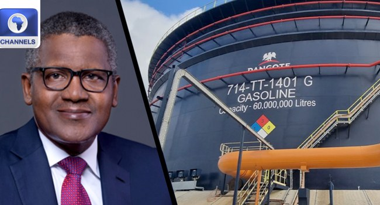

Dangote Refinery IPO Attracts Investors From 120 Countries, All 54 African Nations

Dangote Petroleum Refinery and Petrochemicals says its initial public offering attracted investor applications from 120 countries, including every one of Africa’s 54 nations. The company described the response as a milestone for African capital markets, with applications spanning all six inhabited continents and extending ownership of the industrial asset to a wider group of investors.
The offer opened on September 14, with 4.1 billion ordinary shares priced at ₦525 each and a proposed capital raise of about ₦2.15 trillion. It was originally due to close on October 13, but the Securities and Exchange Commission approved an extension to October 27 to give investors more time to apply. The company said applications were available through commercial banks, stockbroking firms, fintech platforms, capital-market institutions and other distribution partners.
Aliko Dangote, president and chief executive of Dangote Industries Limited, said the participation showed that Africans wanted to invest in and own businesses producing goods on the continent. He said the IPO was intended not only to raise funds but also to widen public ownership. The company plans to continue its expansion programme and Vision 2030 strategy, focusing on operational performance and Africa’s energy security.
David Bird, managing director and chief executive of the refinery, said the international response reflected confidence in its scale, operations and prospects. He said the company would focus on operational excellence, sustainable growth and long-term shareholder value. Group Chief Financial Officer Murat Erden said the offer demonstrated how African financial institutions and digital platforms could connect investors across borders and potentially support broader retail participation and more integrated capital markets.
Erden also said the refinery recorded $22.5 billion in revenue and $5.52 billion in earnings before interest, taxes, depreciation and amortisation in the first nine months of 2026. The company is pursuing plans to expand its refining and petrochemical operations and strengthen distribution. Located in Lagos, the refinery was established to increase domestic processing capacity and reduce reliance on imported refined petroleum products.
Source: Channels TV